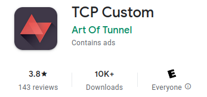
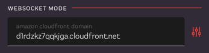
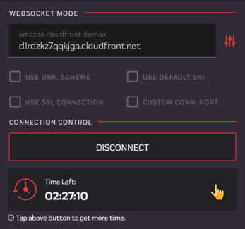

Cara Menggunakan TCP Custom Untuk Inject Paket Ketengan
Metode Websockect CDN CloudFront
Oleh Admin pada 20 Mei 2022
Karena sekarang lagi ramai inject paket ketengan menggunakan bug CDN CloudFront, tentu saja akun SSH susah didapat. Bisa sih bisa, dan itu pun harus stand by jam reset server atau siapa cepat dia dapat untuk mendapatkan akun SSH CDN CloudFront. Maka dari itu Dev Art of Tunnel membuat aplikasi TCP Custom dengan mengadakan fitur inject metode Websocket CDN CloudFront dan CDN Cloudflare tanpa membuat akun SSH / Protokol lainnya. Dan disini saya inisiatif membuat cara menggunakannya dengan metode Websocket CDN CloudFront.
Apa Itu TCP Custom ?

TCP Custom yaitu aplikasi inject paket ketengen seperti yang lainnya, tetapi yang paling menariknya TCP Custom memiliki fitur metode inject dengan hanya memasukan bug host nya saja.
TCP Custom adalah alat yang memungkinkan pengguna untuk membuat koneksi proxy aman dalam bentuk VPN di perangkat mereka yang memungkinkan mereka untuk dapat mengakses sumber daya online atau situs web yang dibatasi.
TCP Custom memungkinkan pengguna untuk dapat menyesuaikan awal koneksi untuk meningkatkan peluang koneksi; ini untuk pengguna tingkat lanjut.
Cara Menggunakan TCP Custom
- 1. Pertama download dulu dong pastinya di Play Store.
- 2. Sambil menunggu download selesai, siapkan bug nya
- 3. Buka aplikasi nya.
- 4. Tap ikon menu di pojok kiri atas atau swipe dari sisi kiri ke kanan.
- 5. Lalu tap General Settings, tap Setup Mode, dan pilih Websocket Mode.
- 6. Pada kolom input, masukan bug.
- 7. Tap ikon Setting / Garis tiga di kanan, lalu pilih CDN Amazon CloudFront.
- 8. Dan terakhir tap Connect, maka akan tampil seperti gambar di bawah.
Untuk cara menemukan bug paketan lain baca Artikel ini.


Penutup
Dan itulah cara menggunakan TCP Custom dengan metode Websocket CDN CloudFront, sekian terimakasih untuk berkunjung dan mohon maaf bila ada salah kata atau menyinggung.